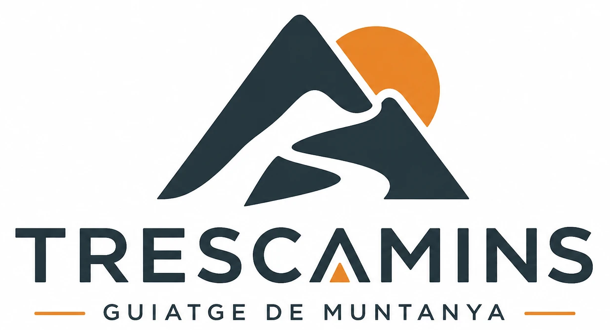
Calenzana → Vizzavona en 9 etapes amb nit en refugis
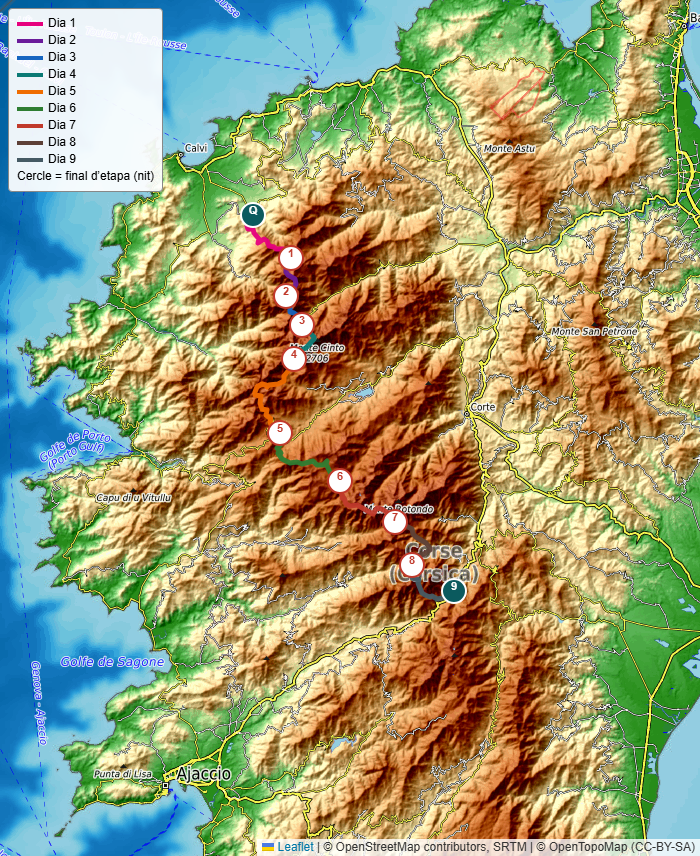
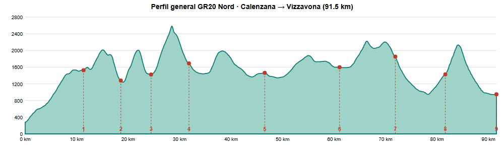
Calendari i resum de les etapes
| Dia | Data | Etapa | km | + m | – m | Marxa | Sortida | Arribada | Nit |
|---|---|---|---|---|---|---|---|---|---|
| 0 | Dj 2/9 | Trobada a Calvi (estació, 15:00), taxi a Calenzana, sopar i presentació | — | Gîte municipal de Calenzana | |||||
| 1 | Dv 3/9 | Calenzana → Ortu di u Piobbu | 11,3 | 1.275 | 30 | 6 h 30 | 8:00 | 15:20 | Ortu di u Piobbu · tenda de lloguer del Parc (2 places, matalàs) |
| 2 | Ds 4/9 | Ortu → Bocca di Pisciaghja → Carrozzu | 7,3 | 540 | 785 | 6 h 35 | 7:30 | 14:55 | Refugi de Carrozzu (1.270 m) · bat-flanc (llit amb mitja pensió) |
| 3 | Dg 5/9 | Carrozzu → Spasimata → Bocca di Stagnu → Asco Stagnu | 5,9 | 770 | 600 | 5 h 30 | 7:30 | 13:55 | Refugi d’Ascu Stagnu (1.422 m) · bat-flanc, 36 llits (alternativa: Hôtel Le Chalet) |
| 4 | Dl 6/9 | Asco Stagnu → Pointe des Éboulis → Tighjettu | 7,4 | 1.160 | 895 | 7 h 00 | 7:00 | 14:50 | Refugi de Tighjettu (1.683 m) · bat-flanc, 48 llits |
| 5 | Dm 7/9 | Tighjettu → Ciottulu → Col de Vergio | 14,7 | 645 | 855 | 7 h 05 | 7:30 | 15:35 | Castel di Vergio (1.400 m) · gîte de 10 places (hotel adjacent com a alternativa) |
| 6 | Dc 8/9 | Vergio → Bocca a Reta → Manganu | 14,5 | 550 | 410 | 5 h 55 | 7:30 | 14:20 | Refugi de Manganu (1.600 m) · bat-flanc, 32 llits |
| 7 | Dj 9/9 | Manganu → Brèche de Capitello → Petra Piana | 10,8 | 780 | 525 | 5 h 45 | 8:00 | 14:40 | Refugi de Petra Piana (1.842 m) · bat-flanc, 28 llits |
| 8 | Dv 10/9 | Petra Piana → passarel·la de Tolla → L’Onda | 9,7 | 480 | 885 | 4 h 45 | 8:30 | 13:20 | Refugi de l’Onda (1.431 m) · bat-flanc, 16–28 llits |
| 9 | Ds 11/9 | L’Onda → Punta Muratello → Vizzavona | 9,9 | 705 | 1.185 | 5 h 35 | 8:00 | 14:25 | Final · sortida de Vizzavona (tren o taxi) |
Temps = hores de marxa (model amb correcció de terreny, calibrat amb els temps del Parc i d’operadors guiats). Les parades i el dinar són a part. Posta de sol ≈19:45 (càlcul astronòmic aproximat). Traçat derivat d’OpenStreetMap i EU-DEM.
Mapa interactiu · plans A, B i C
Línia contínua de colors = Pla A de cada dia · taronja discontínua = Pla B · vermella puntejada = Pla C a peu · gris discontínua = taxi. Clica un dia per ampliar-lo.
Logística, reserves i contactes
Dia 0 · arribada (dj 2/9)
- 15:00 · trobada a l’estació de Calvi. Cada client arriba pel seu compte (avió a Calvi, ferri o tren).
- Trasllat en taxi a Calenzana (uns 14 km, 20 min) amb Taxi Marco Calvi, +33 6 12 99 26 89. Fins a 6 persones per taxi: calen 2 vehicles. Reservar amb antelació.
- Gîte municipal (30 places): presentació de la ruta, preparació de motxilles, sopar.
- Videotrucada amb tothom 15 dies abans per conèixer-se.
Dia 9 · tornada (ds 11/9)
- Final a Vizzavona a la tarda. La tornada la fa cada client pel seu compte: tren cap a Ajaccio (≈1 h), Bastia (≈2 h 40 min) o Calvi (amb canvi a Ponte-Leccia). L’horari del 2027 es consulta a partir d’abril.
Reserves (les fa Trescamins)
| Refugis del Parc | Carrozzu, Asco, Tighjettu, Manganu, Petra Piana, L’Onda i la tenda d’Ortu: tot a pnr-resa.corsica (pagament amb targeta; cancel·lació amb reemborsament fins a 2 mesos abans; canvis fins a 2 dies abans). Llit garantit fins a les 19:00. |
| Allotjaments privats | Castel di Vergio: gîte de 10 places a 20 € per persona; reserva només a hotel-castel-vergio.com, amb pagament total per targeta en reservar; reemborsament del 100 % fins a 15 dies abans; reserves 2027 a partir de mitjan gener de 2027; sopar 29 € (self-service) o 44 € (buffet), esmorzar 14 € (tarifes 2026). Calenzana (gîte municipal, 30 places): reserva per telèfon o correu. |
| Menjars | Esmorzar, pícnic i sopar: es demanen al guardià en arribar al refugi. |
Contactes
| Emergències (Europa) | 112 · policia 17 · bombers 18 |
| PGHM Corse (gendarmeria de muntanya) | +33 4 95 24 24 00 |
| PNRC · reserves de refugis (pnr-resa.corsica) | +33 4 20 06 12 00 / +33 4 95 51 79 06 · contact@pnr-resa.corsica |
| PNRC · informació de senderisme | +33 4 95 51 79 00 / +33 4 95 34 54 80 · infos@pnr.corsica |
| Gîte municipal de Calenzana (nit 0) | +33 4 95 62 77 13 · gite-calenzana@wanadoo.fr · ajuntament 04 95 62 70 08 |
| Hôtel Le Chalet · Asco (alternativa) | +33 4 95 47 81 08 · hotel.le-chalet@wanadoo.fr |
| Castel di Vergio (gîte i hotel) | +33 6 12 74 87 04 · info@casteldevergio.com · hotel-castel-vergio.com |
| Taxi Marco Calvi (fins a 6 persones) | +33 6 12 99 26 89 |
| Bonifatu · Auberge de la Forêt (Pla B dia 1) | Hotel i restaurant +33 4 95 65 09 98 · gîte i càmping +33 6 74 75 11 82 · aubergeforetbonifatu@sfr.fr · auberge-foret-bonifatu.com |
| Taxi Calenzana · Biancardini / Denis / Lauria | +33 6 08 16 53 65 · +33 6 82 57 20 62 · +33 6 80 95 90 19 |
| Trescamins (guia) | +34 600 000 000 · info@trescamins.cat |
Fonts: pàgines del Parc, gr20-infos.com i directoris d’allotjament.
Normes del Parc Natural Regional de Còrsega
- Reserva obligatòria per a totes les nits (refugi, bat-flanc, bivac, tenda). Sortida de Calenzana prohibida després de les 11:00.
- Foc i fumar prohibits del 15 de juny al 30 de setembre; els massissos es poden tancar per risc d’incendi (mapa de risc diari a les 18:00).
- Bivac salvatge prohibit; bany prohibit als llacs d’alta muntanya; gossos amb corretja; no trepitjar pozzines; bastons prohibits a Ninu i Cuscionu; drons amb autorització.
- Cirque de la Solitude: tancat el 2015 després de l’accident, ja no és GR20 (la prohibició es va aixecar el 2018, però no està senyalitzat). Ruta oficial: la desviació per la Pointe des Éboulis.
Material obligatori (segons el Parc) i recomanat
Obligatori
- Sac de dormir amb confort d’uns 5 °C (tenda d’Ortu: nit amb uns 5–8 °C a 1.500 m; als refugis no hi ha llençols ni mantes)
- Jaqueta impermeable o Gore-Tex, roba d’abric, pantalons i pantalons curts
- Farmaciola, manta de supervivència, frontal
- Botes de muntanya, gorra, tovallola
- Cantimplora amb filtre i pastilles potabilitzadores
- Topoguia «À travers la Montagne Corse» (Réf. 067)
Recomanat
- Motxilla de 35–40 L amb coberta impermeable
- Bastons (baixades llargues); protecció solar
- 2,5–3 L d’aigua a la sortida de cada dia
- Bateria externa; mapa i track al mòbil (cobertura inestable)
- Per al guia: botiquí de grup, radio o telèfon satèl·lit si es disposa, mapes en paper
Detecció de perills
| Tempestes | Risc a la tarda; no pujar cims (Pointe des Éboulis, Bocca di Stagnu, Brèche de Capitello) amb tempesta anunciada. Plan B de cada dia a la pàgina corresponent. |
| Caiguda de pedres i terreny mineral | Dies 2, 3, 4 i 7. Mantenir distància entre persones, no tirar pedres. |
| Cadenes i mans corrents | Dies 3, 4 i 7: passos puntuals, més relliscosos amb pluja. Sense material d’alpinisme; si un pas exigeix corda, es torna enrere. |
| Calor i aigua | Dies 1 a 3 i 7: pocs punts d’aigua; calcular litres per etapa. |
| Genolls | Dies 2, 4 i 9 amb baixades llargues: bastons i ritme controlat. |
| Incendis | Foc prohibit fins al 30/9; seguir el mapa de risc diari del Parc. |
| Comunicacions | Cobertura inestable a Ortu, Carrozzu, Tighjettu, Ciottulu, Manganu i L’Onda: pactar el protocol d’emergència (112 / PGHM) abans de sortir. |
Criteris de decisió i temps
- Previsió: consultar 10, 3 i 1 dia abans (Météo-France Còrsega i Open-Meteo). No hi ha previsió fiable fins a ≈10 dies abans.
- L’hora límit dels punts de decisió = hora prevista + 45 min; si s’excedeix, s’aplica el Pla B o C del dia. El Pla B és una alternativa amb menys esforç que el Pla A (menys distància, desnivell o temps) i el Pla C és l’alternativa de sortida o evacuació. A l’arribada al refugi no hi ha decisió: només el límit de seguretat de les 18:30. El Pla C de cada etapa (a peu fins a la carretera més propera, taxi i enllaç l’endemà) és a la pàgina de cada dia; els preus de taxi són una estimació a 1,8 €/km (25 € per 13,9 km segons gobytaxi.com) per taxi de fins a 6 persones, de manera que per a 9 persones calen 2 taxis.
- Arribada als refugis abans de les 19:00 (llit garantit) i amb llum (posta de sol ≈19:45); límit de seguretat 18:30.
- Punt més alt: Pointe des Éboulis 2.607 m (dia 4). Febrer–juny pot quedar neu; al setembre no s’espera.
Arxius GPX · recorreguts i alternatives
Format GPX 1.1 (compatible amb Garmin, Wikiloc, Gaia GPS, Komoot, OsmAnd i la majoria d’apps). Nom: D<dia>_Pla<A|B|C>_<origen-destí>.gpx. Els trams de taxi van marcats com a «TAXI» dins de cada arxiu i els Plans C inclouen, quan cal, el tram a peu de l’endemà.
| Ruta completa | 00_GR20Nord_PlaA_ruta-completa.gpx (9 trams, Pla A) |
| Waypoints del Pla A | 00_GR20Nord_waypoints.gpx (punts clau amb nom i cota) |
| Pla A+ i sortides | 00_GR20Nord_waypoints_PlaA+_i_sortides.gpx (Monte Cinto, Monte d’Oro, punts de recollida de taxi) |
| Tots els arxius | Gonzalez_Albert_Entrega_02_GPX.zip (24 arxius) |
| Fonts | OpenStreetMap (relació «GR 20 Principale», sender i carreteres), EU-DEM (cotes), BRouter (trams a peu dels plans B i C) i OSRM (trams de taxi). |
Plans C · resum d’un cop d’ull
Si cal activar el Pla C d’un dia, la taula diu què es fa, amb quin dia s’enllaça la ruta i quins trams es salten. El detall (quan s’activa, com s’enllaça i el mapa) és al desplegable «Pla C» de la pàgina de cada dia.
| Dia | Etapa | Pla C | S’enllaça amb | Es salta | Nit | A peu | Taxi (km · durada · preu estimat per taxi) |
|---|---|---|---|---|---|---|---|
| 1 | Calenzana → Ortu | Taxi a Bonifatu | Dia 2 · de Bonifatu a Carrozzu | Ortu (dia 1) | Bonifatu | — | 18 km · 29 min · ≈ 30 € (Calenzana → Bonifatu) |
| 2 | Ortu → Carrozzu | A peu a Bonifatu i taxi a Asco Stagnu | Dia 4 · des d’Asco Stagnu | Final del dia 2 i dia 3 | Asco Stagnu | 8,6 km · 3 h 52 (Ortu → Bonifatu) | 106 km · 117 min · ≈ 190 € (Bonifatu → Asco) |
| 3 | Carrozzu → Asco Stagnu | A peu a Bonifatu i taxi a Asco Stagnu | Dia 4 · des d’Asco Stagnu | Dia 3 | Asco Stagnu | 5,6 km · 2 h 40 (Carrozzu → Bonifatu) | 106 km · 117 min · ≈ 190 € (Bonifatu → Asco) |
| 4 | Asco Stagnu → Tighjettu | Taxi a Calasima i a peu a Tighjettu | Dia 5 · des de Tighjettu | Pointe des Éboulis (dia 4) | Tighjettu | 8,4 km · 6 h 33 (Calasima → Tighjettu) | 72 km · 80 min · ≈ 130 € (Asco → Calasima) |
| 5 | Tighjettu → Col de Vergio | A peu a Calasima i taxi a Vergio | Dia 6 · des de Col de Vergio | Ciottulu i final del dia 5 | Castel di Vergio | 6,3 km · 2 h 21 (Ballone → Calasima) | 25 km · 31 min · ≈ 45 € (Calasima → Vergio) |
| 6 | Col de Vergio → Manganu | No hi ha pla C (Manganu no té carretera) | — | — | Castel di Vergio | — | — |
| 7 | Manganu → Petra Piana | A peu a Grotelle, taxi a Tattone | Dia 8 · de Tattone a Tolla i L’Onda; després dia 9 | Petra Piana i primera meitat del dia 8 | Tattone (Gîte Chez Pierrot) | 4,2 km · 2 h 09 (Brèche → Grotelle) | ≈ 42 km · ≈ 60 min · ≈ 75 € (Grotelle → Tattone) |
| 8 | Petra Piana → L’Onda | A peu a Tattone i taxi a Vizzavona | Final de la ruta a Vizzavona | Dia 9 | Vizzavona | 6,2 km · 2 h 30 (Tolla → Tattone) | 4 km · 5 min · ≈ 15 € (Tattone → Vizzavona) |
| 9 | L’Onda → Vizzavona | No hi ha pla C (Vizzavona és la sortida) | — | — | Vizzavona | — | — |
Preus de taxi: 1,8 €/km (25 € per 13,9 km segons gobytaxi.com), per a fins a 6 persones; per a 9 persones calen 2 taxis. Temps a peu: marxa del grup, a la mateixa escala que el pla A.
Dia 1 · Dv 3/9 · Calenzana → Ortu di u Piobbu
Descarrega els GPX del dia 1: Pla A Pla B Pla C
| Punt | Cota (m) | Dist. tram (km) | Desn. + | Desn. – | Temps tram | Arribada | Aturada | Sortida | Hora límit |
|---|---|---|---|---|---|---|---|---|---|
| 0. Calenzana (inici) | 280 | 0,00 | 0 | 0 | — | 8:00 | — | 8:00 | — |
| 1. Promontori d'Arghjova | 820 | 4,80 | 535 | 0 | 2:40 | 10:40 | 5 min | 10:45 | 11:25 |
| 2. Bocca à u Saltu | 1250 | 2,20 | 430 | 0 | 1:50 | 12:35 | 45 min | 13:20 | 13:20 |
| 3. Refugi d'Ortu di u Piobbu | 1520 | 4,33 | 310 | 30 | 2:00 | 15:20 | 0 min | 15:20 | 18:30 |
Aturades: 5 min entre trams i 45 min de dinar. Arribada prevista al refugi: 15:20; límit de seguretat 18:30 (llit garantit fins a les 19:00). Nit: Ortu di u Piobbu · tenda de lloguer del Parc (2 places, matalàs).
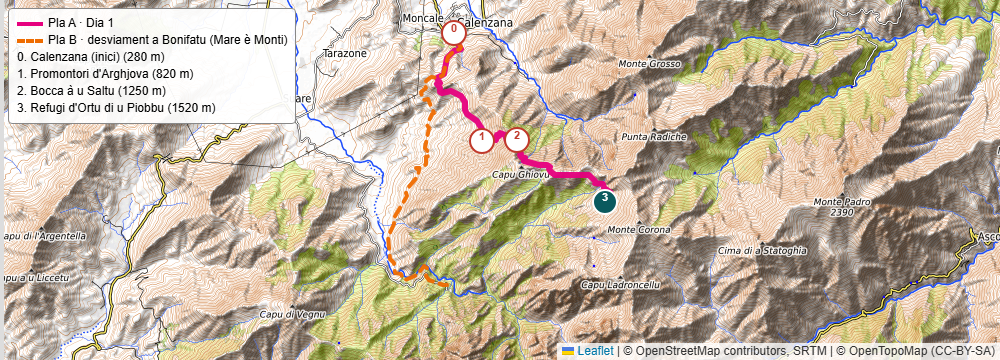
Mapa: línia contínua = Pla A · verda discontínua = Pla A+ · taronja = Pla B · vermella puntejada = Pla C. Sense línia: sortida pel mateix camí o sense traçat fiable (vegeu el text).
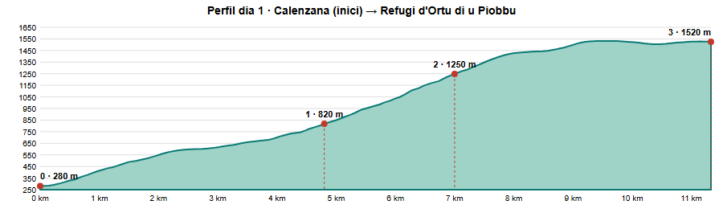
Plans (punt clau: Bocca à u Saltu)
| Pla A | Pujada contínua per l’antic camí de mules fins a Ortu, passant per Arghjova (820 m) i Bocca à u Saltu (1.250 m). | ||||||
| Pla A+ | No es contempla: l’etapa ja és exigent i convé arribar amb forces al dia 2. | ||||||
| Pla B | Si el grup va lent o algú no pot seguir a Arghjova o a Bocca à u Saltu: desviament cap a Bonifatu pel Mare è Monti (taronja al mapa). Són 11,5 km, +634 m / –369 m i unes 5 h 15 de marxa de grup (calculat amb OpenStreetMap): una distància semblant al Pla A, però amb la meitat de pujada i prop d’1 h 15 menys de marxa. L’endemà es recupera la ruta de Bonifatu a Carrozzu pel camí d’enllaç (uns 6 km, 2 h 30–3 h). Allotjament a Bonifatu: Auberge de la Forêt (gîte d’étape i hotel, oberta de l’1 d’abril al 30 de setembre; llit al gîte des d’uns 24 € per persona, preu orientatiu). | ||||||
| Pla C | Evacuació: tornada a Calenzana (taxi) o 112 / PGHM Corse. A Ortu no hi ha cobertura estable: avisar abans de la puja.Pla C complet: Taxi a Bonifatu i enllaç a CarrozzuPLA C · Taxi a Bonifatu i enllaç a Carrozzu
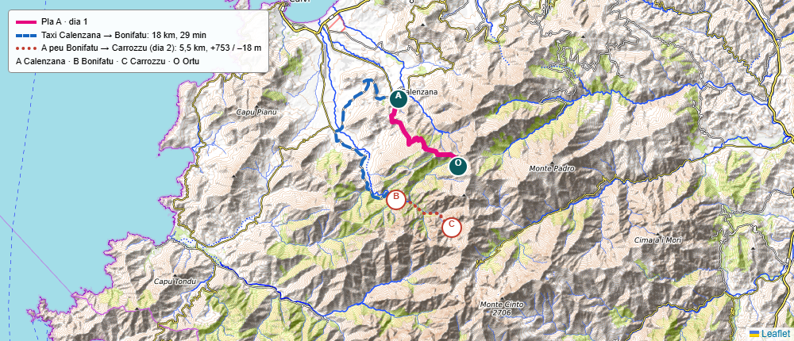 |
Decisió: Arribar a Bocca à u Saltu a l’hora límit; si no, es pren el Pla B. Aigua: Font d’Ortiventi (uns 500 m després de sortir de Calenzana): és l’últim punt d’aigua fins a Ortu. Carregar 2,5–3 L.
- No es pot sortir de Calenzana després de les 11:00 (arrêté municipal): sortida a les 8:00.
- Etapa de pujada contínua (+1.275 m); calor a la part baixa: sortir d’hora.
- Ortu no té bat-flancs (el refugi va cremar el 2019): només bivac i tenda de lloguer. Carregar el mòbil abans; la recàrrega a Ortu és de pagament.
Dia 2 · Ds 4/9 · Ortu → Bocca di Pisciaghja → Carrozzu
Descarrega els GPX del dia 2: Pla A Pla B Pla C
| Punt | Cota (m) | Dist. tram (km) | Desn. + | Desn. – | Temps tram | Arribada | Aturada | Sortida | Hora límit |
|---|---|---|---|---|---|---|---|---|---|
| 0. Refugi d'Ortu di u Piobbu | 1520 | 0,00 | 0 | 0 | — | 7:30 | — | 7:30 | — |
| 1. Bocca di Pisciaghja | 2020 | 3,79 | 530 | 45 | 3:20 | 10:50 | 45 min | 11:35 | 11:35 |
| 2. Bocca d'Avartoli | 1900 | 1,51 | 10 | 125 | 0:55 | 12:30 | 5 min | 12:35 | 13:15 |
| 3. Refugi de Carrozzu | 1270 | 1,95 | 0 | 615 | 2:20 | 14:55 | 0 min | 14:55 | 18:30 |
Aturades: 5 min entre trams i 45 min de dinar. Arribada prevista al refugi: 14:55; límit de seguretat 18:30 (llit garantit fins a les 19:00). Nit: Refugi de Carrozzu (1.270 m) · bat-flanc (llit amb mitja pensió).
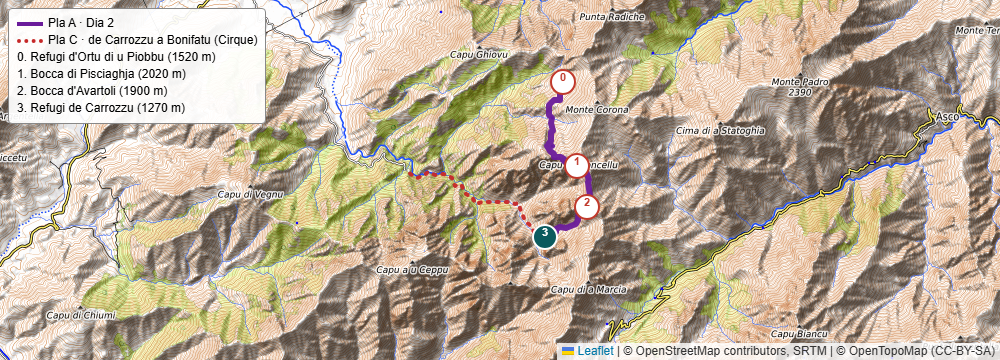
Mapa: línia contínua = Pla A · verda discontínua = Pla A+ · taronja = Pla B · vermella puntejada = Pla C. Sense línia: sortida pel mateix camí o sense traçat fiable (vegeu el text).
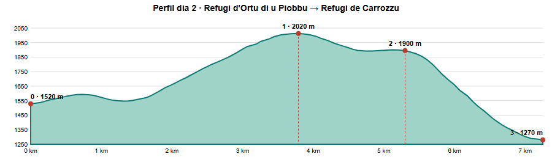
Plans (punt clau: Bocca di Pisciaghja)
| Pla A | Pujada a Bocca di Pisciaghja (2.020 m), pas per Bocca d’Avartoli i Bocca di l’Innominata, i baixada llarga a la terrassa de Carrozzu. | ||||||
| Pla A+ | No es contempla. | ||||||
| Pla B | Si hi ha tempesta o visibilitat nul·la abans de Bocca di Pisciaghja: no pujar i esperar a Ortu, o baixar a Bonifatu pel sender d’enllaç Ortu–Bonifatu: 8,6 km, +28 / –1.049 m, uns 3 h 52 de marxa de grup (calculat amb OpenStreetMap). Nit a l’Auberge de la Forêt de Bonifatu. | ||||||
| Pla C | Evacuació des de Carrozzu a Bonifatu pel Cirque (enllaç oficial de 6 km, uns 2 h 30–3 h). Contacte d’emergència: 112 / PGHM Corse.Pla C complet: A peu a Bonifatu i taxi fins a Asco StagnuPLA C · A peu a Bonifatu i taxi fins a Asco Stagnu
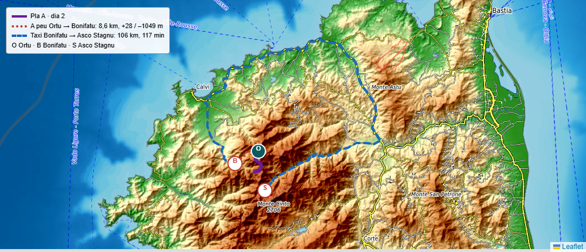 |
Decisió: A Bocca di Pisciaghja no es continua passada l’hora límit. Aigua: Font entre els vern, sobre el torrent, just a l’inici (carregar 2,5 L): no hi ha més aigua fins a Carrozzu.
- Etapa mineral amb pedreres i esllavissades: terreny «accidentogen» segons el Parc (turmells).
- El Parc situa la pujada a Bocca di Pisciaghja en unes 3 h 30 des d’Ortu.
- Ortu i Carrozzu: cobertura mòbil inestable.
Dia 3 · Dg 5/9 · Carrozzu → Spasimata → Bocca di Stagnu → Asco Stagnu
Descarrega els GPX del dia 3: Pla A Pla B Pla C
| Punt | Cota (m) | Dist. tram (km) | Desn. + | Desn. – | Temps tram | Arribada | Aturada | Sortida | Hora límit |
|---|---|---|---|---|---|---|---|---|---|
| 0. Refugi de Carrozzu | 1270 | 0,00 | 0 | 0 | — | 7:30 | — | 7:30 | — |
| 1. Passarel·la de Spasimata | 1250 | 0,66 | 20 | 20 | 0:20 | 7:50 | 5 min | 7:55 | 8:35 |
| 2. Llac de la Muvrella | 1860 | 1,90 | 600 | 0 | 2:35 | 10:30 | 5 min | 10:35 | 11:15 |
| 3. Bocca di Stagnu | 2010 | 0,93 | 150 | 5 | 0:45 | 11:20 | 45 min | 12:05 | 12:05 |
| 4. Refugi d'Ascu Stagnu (Haut Asco) | 1422 | 2,38 | 0 | 575 | 1:50 | 13:55 | 0 min | 13:55 | 18:30 |
Aturades: 5 min entre trams i 45 min de dinar. Arribada prevista al refugi: 13:55; límit de seguretat 18:30 (llit garantit fins a les 19:00). Nit: Refugi d’Ascu Stagnu (1.422 m) · bat-flanc, 36 llits (alternativa: Hôtel Le Chalet).
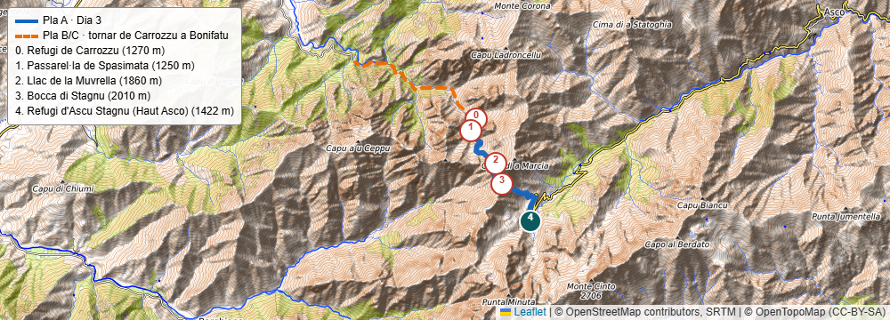
Mapa: línia contínua = Pla A · verda discontínua = Pla A+ · taronja = Pla B · vermella puntejada = Pla C. Sense línia: sortida pel mateix camí o sense traçat fiable (vegeu el text).
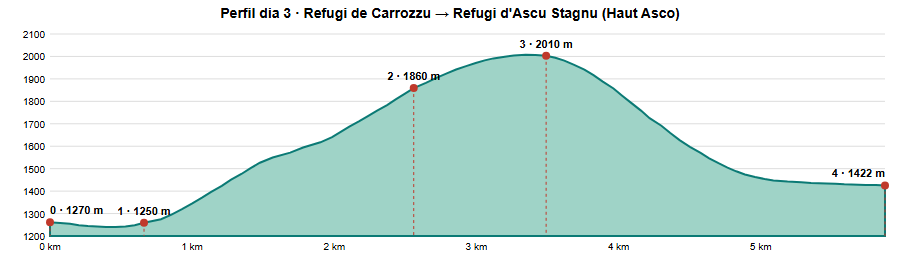
Plans (punt clau: Llac de la Muvrella)
| Pla A | Spasimata → llac de la Muvrella (1.860 m) → Bocca di Stagnu → baixada pel bosc de pins laricios fins a Haut Asco. | ||||||
| Pla A+ | No es contempla. | ||||||
| Pla B | Si hi ha pluja o tempesta a la sortida: no entrar al corredor de la Muvrella; esperar a Carrozzu o tornar a Bonifatu (enllaç de 6 km). | ||||||
| Pla C | Passat el llac de la Muvrella no hi ha sortida: la sortida segura és Asco Stagnu (estació) o tornar a Carrozzu (Spasimata és a uns 15 min). Emergència: 112 / PGHM.Pla C complet: A peu a Bonifatu i taxi fins a Asco StagnuPLA C · A peu a Bonifatu i taxi fins a Asco Stagnu
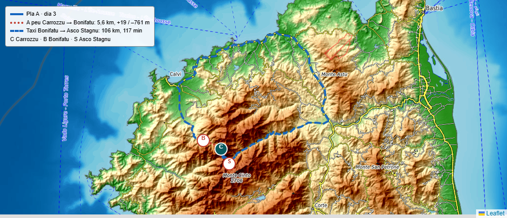 |
Decisió: Al llac de la Muvrella cal estar a l’hora límit per no creuar el corredor tard. Aigua: No hi ha aigua en tota l’etapa: carregar a Carrozzu (3 L). L’aigua del llac de la Muvrella no és potable.
- Passarel·la penjant de Spasimata (30 anys, rehabilitada pel PNRC): possible bany al riu.
- Passos amb mans corrents, molt relliscosos amb pluja; corredor de pedra i fort pendent fins a Bocca di Stagnu (2.010 m).
- Baixada pronunciada (uns 570 m en 2,4 km) cap als làrixs de Haut Asco.
Dia 4 · Dl 6/9 · Asco Stagnu → Pointe des Éboulis → Tighjettu
Descarrega els GPX del dia 4: Pla A Pla C Cim A+ (Cinto)
| Punt | Cota (m) | Dist. tram (km) | Desn. + | Desn. – | Temps tram | Arribada | Aturada | Sortida | Hora límit |
|---|---|---|---|---|---|---|---|---|---|
| 0. Refugi d'Ascu Stagnu | 1422 | 0,00 | 0 | 0 | — | 7:00 | — | 7:00 | — |
| 1. Pointe des Éboulis | 2607 | 4,09 | 1.160 | 5 | 4:30 | 11:30 | 45 min | 12:15 | 12:15 |
| 2. Bocca Crucetta | 2450 | 0,27 | 0 | 110 | 0:15 | 12:30 | 5 min | 12:35 | 13:15 |
| 3. Refugi de Tighjettu | 1683 | 2,99 | 0 | 780 | 2:15 | 14:50 | 0 min | 14:50 | 18:30 |
Aturades: 5 min entre trams i 45 min de dinar. Arribada prevista al refugi: 14:50; límit de seguretat 18:30 (llit garantit fins a les 19:00). Nit: Refugi de Tighjettu (1.683 m) · bat-flanc, 48 llits.
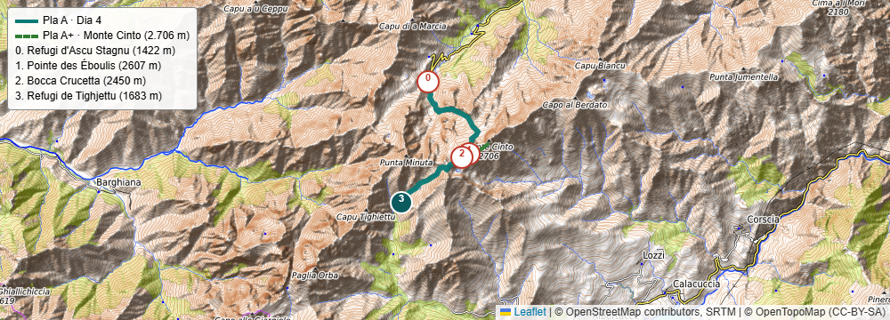
Mapa: línia contínua = Pla A · verda discontínua = Pla A+ · taronja = Pla B · vermella puntejada = Pla C. Sense línia: sortida pel mateix camí o sense traçat fiable (vegeu el text).
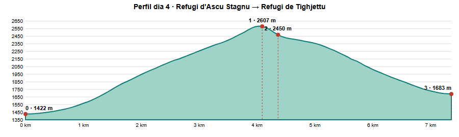
Plans (punt clau: Pointe des Éboulis)
| Pla A | Pujada pel rierol de Tighjettu, Pointe des Éboulis (2.607 m), Bocca Crucetta (2.450 m) i baixada a Tighjettu. | ||||||
| Pla A+ | Ascens opcional al Monte Cinto (2.706 m, uns 100 m de pujada addicional segons gr20-infos): només amb bon temps i el grup a l’hora a la Pointe. El guia decideix a la Pointe des Éboulis, segons el temps i l’estat del grup. | ||||||
| Pla B | Si el vent és fort o s’anuncien tempestes: no sortir d’Asco i esperar (hotel Le Chalet com a alternativa). Un cop a dalt, baixar directament a Tighjettu (gr20-infos). | ||||||
| Pla C | Evacuació: tornar a Asco Stagnu. Des del llac del Cinto hi ha una sortida cap a l’Erco i Lozzi (llarga). 112 / PGHM Corse.Pla C complet: Taxi a Calasima i pujada a TighjettuPLA C · Taxi a Calasima i pujada a Tighjettu
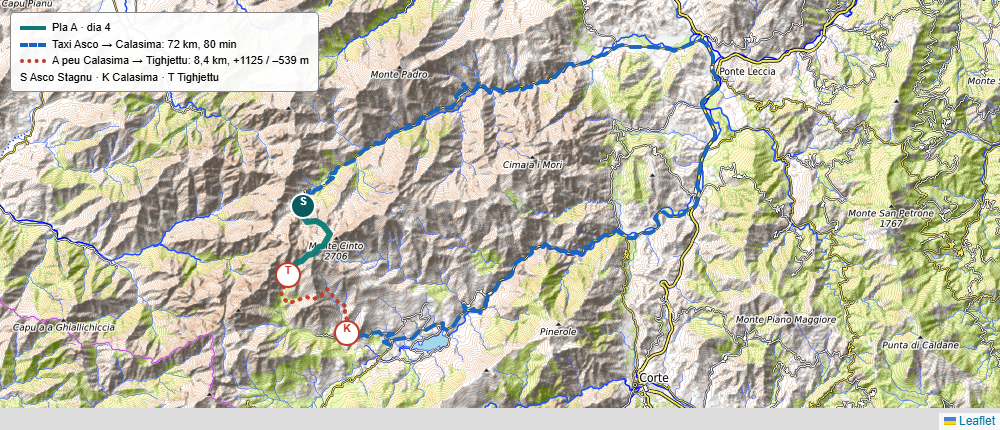 |
Decisió: Pujar a la Pointe només abans de les 13:00 (risc de tempesta a la tarda). Aigua: Rierol de Tighjettu (a la pujada) i font de Bocca Crucetta: omplir abans de la part alta. Carregar 3 L.
- El Cirque de la Solitude es va tancar el 2015 després de l’accident i ja no forma part del GR20 (el prefecte va aixecar la prohibició el 2018, però no està senyalitzat ni es considera una variant): la ruta oficial és la desviació per la Pointe des Éboulis (el punt més alt del GR20 oficial).
- Passos amb cadenes i mans corrents (s’usen amb pluja); molta pedra solta; tram llarg exposat al vent.
- Cap tempesta a l’horitzó per pujar: no hi ha cap sortida ràpida des de dalt.
Dia 5 · Dm 7/9 · Tighjettu → Ciottulu → Col de Vergio
Descarrega els GPX del dia 5: Pla A Pla B Pla C
| Punt | Cota (m) | Dist. tram (km) | Desn. + | Desn. – | Temps tram | Arribada | Aturada | Sortida | Hora límit |
|---|---|---|---|---|---|---|---|---|---|
| 0. Refugi de Tighjettu | 1683 | 0,00 | 0 | 0 | — | 7:30 | — | 7:30 | — |
| 1. Bergeries de Ballone (Vallone) | 1440 | 2,78 | 0 | 235 | 1:10 | 8:40 | 5 min | 8:45 | 9:25 |
| 2. Bocca di Foggiale | 1965 | 3,22 | 530 | 0 | 2:15 | 11:00 | 45 min | 11:45 | 11:45 |
| 3. Refugi de Ciottulu di i Mori | 1991 | 0,46 | 20 | 0 | 0:10 | 11:55 | 5 min | 12:00 | 12:40 |
| 4. Bergeries de Radule | 1370 | 6,00 | 5 | 620 | 2:35 | 14:35 | 5 min | 14:40 | 15:20 |
| 5. Col de Vergio | 1467 | 2,26 | 90 | 0 | 0:55 | 15:35 | 0 min | 15:35 | 18:30 |
Aturades: 5 min entre trams i 45 min de dinar. Arribada prevista al refugi: 15:35; límit de seguretat 18:30 (llit garantit fins a les 19:00). Nit: Castel di Vergio (1.400 m) · gîte de 10 places (hotel adjacent com a alternativa).
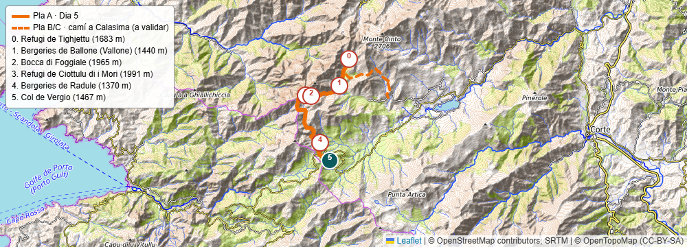
Mapa: línia contínua = Pla A · verda discontínua = Pla A+ · taronja = Pla B · vermella puntejada = Pla C. Sense línia: sortida pel mateix camí o sense traçat fiable (vegeu el text).
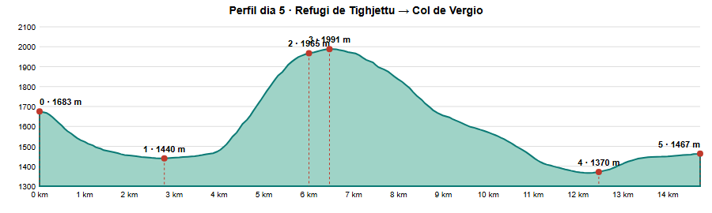
Plans (punt clau: Bocca di Foggiale)
| Pla A | Baixada als bergeries de Ballone, pujada a Bocca di Foggiale (1.965 m), refugi de Ciottulu (1.991 m), baixada pel Golo i Radule fins al Col de Vergio. | ||||||
| Pla A+ | No es contempla. | ||||||
| Pla B | Des de Ballone, un sender a l’esquerra baixa a la carretera de Calasima en uns 2 h (gr20-infos), amb opció de transport. Si hi ha tempesta, esperar a Ciottulu. | ||||||
| Pla C | Ciottulu (uns 20 min després de Bocca di Foggiale) és el refugi de recurs en cas de tempesta. Evacuació des de Ballone a Calasima i, des de Vergio, per la carretera D84. 112 / PGHM.Pla C complet: A peu a Calasima i taxi fins al Col de VergioPLA C · A peu a Calasima i taxi fins al Col de Vergio
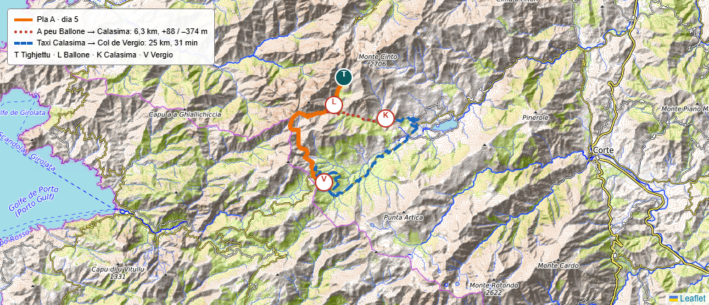 |
Decisió: A Ciottulu no continuar si es passa l’hora límit: dormir al refugi (cal poder reservar-lo). Aigua: Rierol del Viru (bergeries de Ballone, amb possible bany), font del Golo a Ciottulu i Radule. Carregar 2,5 L.
- Pujada forta de 500 m a través de barres rocoses fins a Bocca di Foggiale (Fuciale), a sota de la cara est de Paglia Orba.
- Paglia Orba i Capu Tafunatu: no balisades i amb grimpada: fora de l’abast, no s’ofereixen.
- La segona meitat és de baixada llarga i fàcil fins a Vergio; vigilar l’hora de la tarda.
Dia 6 · Dc 8/9 · Vergio → Bocca a Reta → Manganu
Descarrega els GPX del dia 6: Pla A
| Punt | Cota (m) | Dist. tram (km) | Desn. + | Desn. – | Temps tram | Arribada | Aturada | Sortida | Hora límit |
|---|---|---|---|---|---|---|---|---|---|
| 0. Col de Vergio | 1467 | 0,00 | 0 | 0 | — | 7:30 | — | 7:30 | — |
| 1. Valdu Niellu (fons de vall) | 1344 | 2,55 | 0 | 120 | 1:00 | 8:30 | 5 min | 8:35 | 9:15 |
| 2. Bocca a Reta | 1880 | 5,97 | 535 | 0 | 2:45 | 11:20 | 45 min | 12:05 | 12:05 |
| 3. Llac de Ninu | 1760 | 0,96 | 0 | 115 | 0:25 | 12:30 | 5 min | 12:35 | 13:15 |
| 4. Refugi de Manganu | 1600 | 5,05 | 15 | 175 | 1:45 | 14:20 | 0 min | 14:20 | 18:30 |
Aturades: 5 min entre trams i 45 min de dinar. Arribada prevista al refugi: 14:20; límit de seguretat 18:30 (llit garantit fins a les 19:00). Nit: Refugi de Manganu (1.600 m) · bat-flanc, 32 llits.
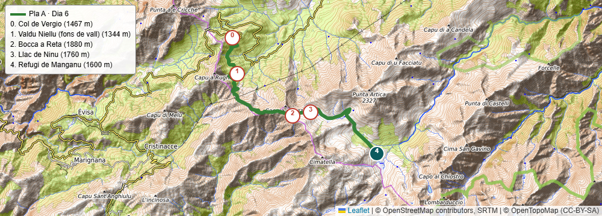
Mapa: línia contínua = Pla A · verda discontínua = Pla A+ · taronja = Pla B · vermella puntejada = Pla C. Sense línia: sortida pel mateix camí o sense traçat fiable (vegeu el text).
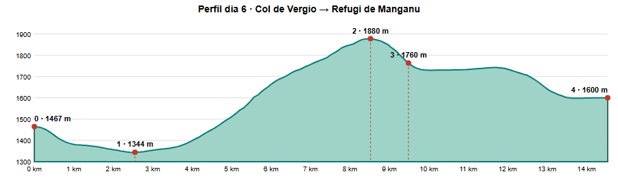
Plans (punt clau: Llac de Ninu)
| Pla A | Valdu Niellu, pujada a Bocca a Reta (1.880 m), llac de Ninu i plateau de Camputile fins a Manganu. |
| Pla A+ | No es contempla. |
| Pla B | Si el grup va lent: reduir les parades. No hi ha cap sortida intermèdia confirmada entre Vergio i Manganu; la decisió es pren a Vergio abans de sortir (previsió i estat del grup). |
| Pla C | Evacuació: tornar a Vergio (carretera D84) abans de Bocca a Reta; després, cap a Manganu. 112 / PGHM. |
Decisió: A Bocca a Reta s’ha d’estar a l’hora límit per arribar a Manganu amb llum. Aigua: Font del llac de Ninu; a Manganu aigua corrent. Carregar 2 L.
- Etapa llarga però rodona (el Parc la considera «roulante»): marxa constant, sense gaire exposició.
- Pozzines (terrenys humits): prohibit trepitjar-les. Bastons prohibits a la zona del llac de Ninu i el plateau del Cuscionu.
- Cavalls i bestiar a la zona: no alimentar ni molestar.
Dia 7 · Dj 9/9 · Manganu → Brèche de Capitello → Petra Piana
Descarrega els GPX del dia 7: Pla A Pla C Pla C del dia 8
| Punt | Cota (m) | Dist. tram (km) | Desn. + | Desn. – | Temps tram | Arribada | Aturada | Sortida | Hora límit |
|---|---|---|---|---|---|---|---|---|---|
| 0. Refugi de Manganu | 1600 | 0,00 | 0 | 0 | — | 8:00 | — | 8:00 | — |
| 1. Bocca alle Porte | 2225 | 5,20 | 625 | 5 | 3:00 | 11:00 | 45 min | 11:45 | 11:45 |
| 2. Brèche de Capitello / Bocca a Soglia | 2050 | 1,64 | 5 | 170 | 0:45 | 12:30 | 5 min | 12:35 | 13:15 |
| 3. Bocca Muzzella | 2206 | 2,00 | 150 | 0 | 0:55 | 13:30 | 5 min | 13:35 | 14:15 |
| 4. Refugi de Petra Piana | 1842 | 2,00 | 0 | 350 | 1:05 | 14:40 | 0 min | 14:40 | 18:30 |
Aturades: 5 min entre trams i 45 min de dinar. Arribada prevista al refugi: 14:40; límit de seguretat 18:30 (llit garantit fins a les 19:00). Nit: Refugi de Petra Piana (1.842 m) · bat-flanc, 28 llits.
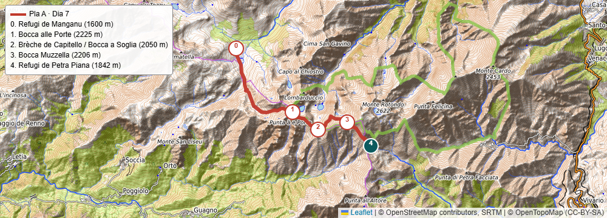
Mapa: línia contínua = Pla A · verda discontínua = Pla A+ · taronja = Pla B · vermella puntejada = Pla C. Sense línia: sortida pel mateix camí o sense traçat fiable (vegeu el text).
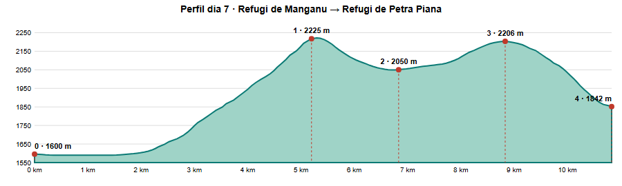
Plans (punt clau: Brèche de Capitello)
| Pla A | Pujada a Bocca alle Porte (2.225 m), Brèche de Capitello (2.073 m), Bocca a Soglia, col de Rinoso, Bocca Muzzella i baixada a Petra Piana. | ||||||
| Pla A+ | No es contempla. | ||||||
| Pla B | Si hi ha tempesta o roca mullada: no passar la Brèche i esperar a Manganu que s’assequi i millori (una nit addicional, a reservar). No es proposa cap altre itinerari: la sortida cap a Corte per Melo i Grottelle (gr20-infos) és llarga i queda com a Pla C. | ||||||
| Pla C | Evacuació: Corte per Grottelle/Melo (sortida llarga). Cobertura mòbil inestable a la part alta. 112 / PGHM.Pla C complet: A peu a Grotelle, taxi a Tattone i enllaç a L’OndaPLA C · A peu a Grotelle, taxi a Tattone i enllaç a L’Onda
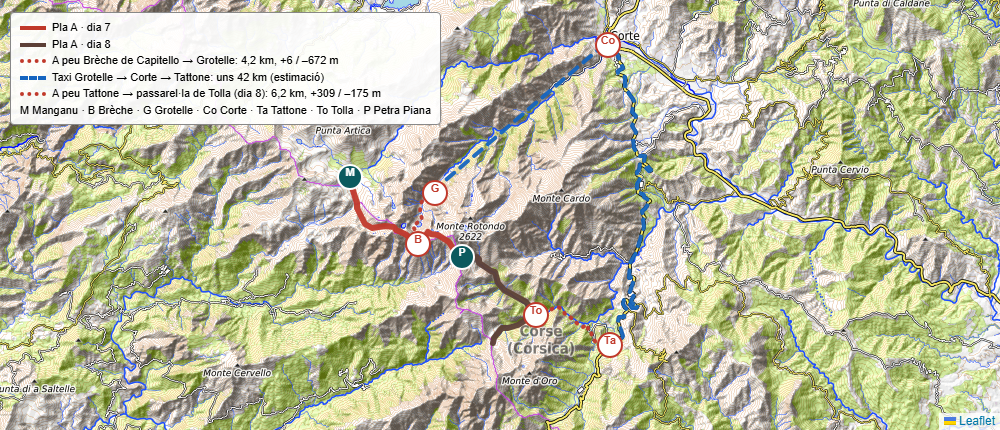 |
Decisió: A Bocca alle Porte no continuar passada l’hora límit. Aigua: Cap font confirmada fins a Petra Piana: carregar 3 L a Manganu.
- Etapa tècnica: uns 600 m de pujada en menys de 3 km amb cadenes i escales fins a la Brèche de Capitello (gr20-infos). Passos puntuals, no via ferrada.
- Cap ascens amb corda: si el pas no es pot fer sense assegurar, es tornarà enrere.
- Vistes dels llacs de Capitello i Melo (no es baixa a banyar-se).
Dia 8 · Dv 10/9 · Petra Piana → passarel·la de Tolla → L’Onda
Descarrega els GPX del dia 8: Pla A Pla B Pla C
| Punt | Cota (m) | Dist. tram (km) | Desn. + | Desn. – | Temps tram | Arribada | Aturada | Sortida | Hora límit |
|---|---|---|---|---|---|---|---|---|---|
| 0. Refugi de Petra Piana | 1842 | 0,00 | 0 | 0 | — | 8:30 | — | 8:30 | — |
| 1. Passarel·la de Tolla | 942 | 6,43 | 0 | 885 | 2:50 | 11:20 | 5 min | 11:25 | 12:05 |
| 2. Refugi de l'Onda | 1431 | 3,28 | 480 | 0 | 1:55 | 13:20 | 0 min | 13:20 | 18:30 |
Aturades: 5 min entre trams i 45 min de dinar. Arribada prevista al refugi: 13:20; límit de seguretat 18:30 (llit garantit fins a les 19:00). Nit: Refugi de l’Onda (1.431 m) · bat-flanc, 16–28 llits.
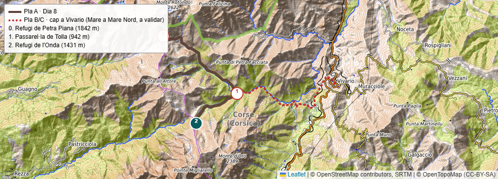
Mapa: línia contínua = Pla A · verda discontínua = Pla A+ · taronja = Pla B · vermella puntejada = Pla C. Sense línia: sortida pel mateix camí o sense traçat fiable (vegeu el text).
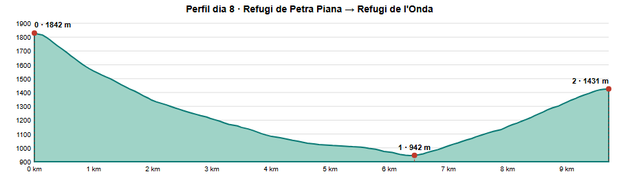
Plans (punt clau: Passarel·la de Tolla)
| Pla A | Baixada per la vall del Manganello, bergeries de Gialgo i Tolla, passarel·la de Tolla (942 m, punt més baix) i pujada a L’Onda. | ||||||
| Pla A+ | No es contempla (la variant per crestes queda fora de l’abast). | ||||||
| Pla B | Si el grup va just de forces o hi ha mal temps: sortir a Tattone/Vivario des de la passarel·la de Tolla (menys d’1 h, Mare a Mare Nord). | ||||||
| Pla C | Evacuació: Tattone o Vivario des de Tolla. 112 / PGHM Corse. L’Onda: cobertura mòbil inestable.Pla C complet: A peu a Tattone i taxi fins a VizzavonaPLA C · A peu a Tattone i taxi fins a Vizzavona
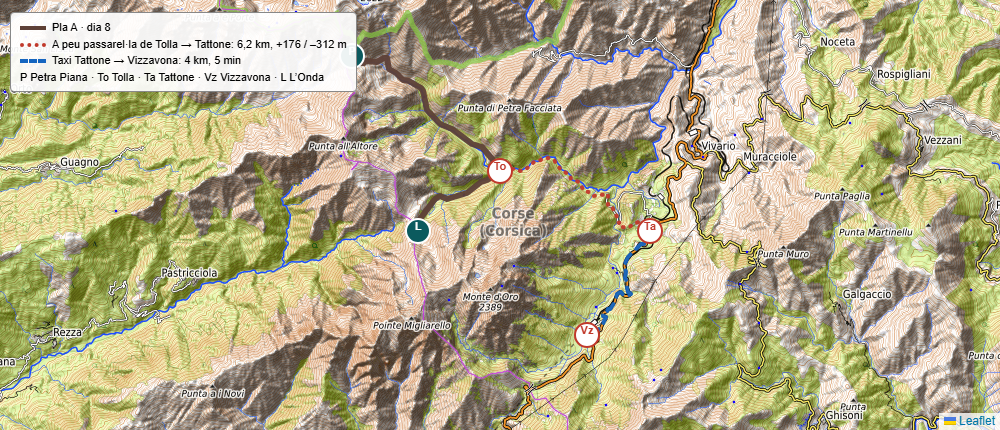 |
Decisió: A la passarel·la de Tolla no es continua passada l’hora límit. Aigua: Manganello i torrents (possible bany); omplir a Petra Piana i a Tolla. Carregar 2 L.
- Etapa fàcil comparada amb les anteriors: dia de recuperació (4 h 45 de marxa).
- Itinerari principal per la vall del Manganello (més llarg i fàcil); la variant per les crestes (Pinzi Corbini) és més tècnica i només amb temps estable: no s’ofereix.
- Baixada de 800 m seguida d’una pujada final fins a L’Onda.
Dia 9 · Ds 11/9 · L’Onda → Punta Muratello → Vizzavona
Descarrega els GPX del dia 9: Pla A Cim A+ (Monte d’Oro)
| Punt | Cota (m) | Dist. tram (km) | Desn. + | Desn. – | Temps tram | Arribada | Aturada | Sortida | Hora límit |
|---|---|---|---|---|---|---|---|---|---|
| 0. Refugi de l'Onda | 1431 | 0,00 | 0 | 0 | — | 8:00 | — | 8:00 | — |
| 1. Punta Muratello | 2138 | 2,39 | 690 | 0 | 2:10 | 10:10 | 5 min | 10:15 | 10:55 |
| 2. Cascades dels Anglais | 1050 | 4,57 | 5 | 1.075 | 2:30 | 12:45 | 45 min | 13:30 | 13:30 |
| 3. Vizzavona (estació) | 954 | 2,98 | 10 | 110 | 0:55 | 14:25 | 0 min | 14:25 | — |
Aturades: 5 min entre trams i 45 min de dinar. Arribada prevista a Vizzavona: 14:25; cal tenir en compte l’horari del tren o del taxi de tornada. Nit: Final · sortida de Vizzavona (tren o taxi).
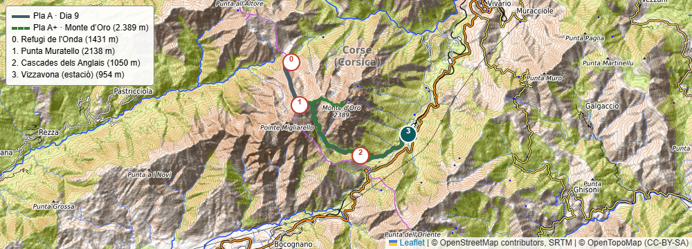
Mapa: línia contínua = Pla A · verda discontínua = Pla A+ · taronja = Pla B · vermella puntejada = Pla C. Sense línia: sortida pel mateix camí o sense traçat fiable (vegeu el text).
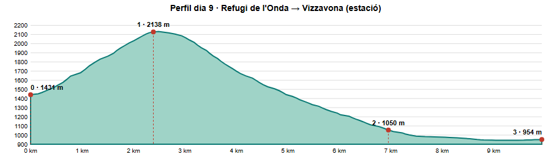
Plans (punt clau: Punta Muratello)
| Pla A | Pujada a Punta Muratello (2.138 m), llarga baixada mineral fins a Porteto, passarel·la de Tortetto, cascades dels Anglais i Vizzavona. |
| Pla A+ | Variant per Monte d’Oro (2.389 m): uns 5 h fins a Vizzavona segons gr20-infos (vegeu el GPX d’A+). Sender tècnic; només amb bon temps, grup molt fort i hora favorable: no s’ofereix per defecte. |
| Pla B | No hi ha drecera: la ruta oficial ja passa per la passarel·la de Tortetto i les cascades dels Anglais (opció d’uns 3 h 15 fins a Vizzavona segons gr20-infos). Si cal guanyar temps: reduir parades a Muratello i no fer el Monte d’Oro. |
| Pla C | Evacuació: Col de Vizzavona (1.183 m, hotel Monte d’Oro o La Halte du Prince) o estació de Vizzavona. 112 / PGHM Corse. |
Decisió: A Punta Muratello mantenir l’hora límit per no perdre el tren de tornada. Aigua: Cascades dels Anglais (bany) a mig descens; omplir a L’Onda. Carregar 2 L.
- L’etapa amb el perfil descendent més gran del GR20 (−1.185 m): molt dura per als genolls; recomanar bastons.
- El final és Vizzavona (954 m), cruïlla natural entre el nord i el sud de Còrsega; hi ha estació de tren.
- Mirar l’horari de tren de tornada abans de sortir (s’actualitza cap a l’abril del 2027).
Waypoints (UTM 31T, ETRS89 ≈ WGS84)
| Dia | Punt | Cota (m) | UTM 31T (X Y) | Lat, Lon |
|---|---|---|---|---|
| Dia 1 | Calenzana (inici) | 280 | 981081 4722837 | 42.50815, 8.85485 |
| Dia 1 | Promontori d'Arghjova | 820 | 982098 4719839 | 42.48066, 8.86465 |
| Dia 1 | Bocca à u Saltu | 1250 | 983088 4719945 | 42.48100, 8.87671 |
| Dia 1 | Refugi d'Ortu di u Piobbu | 1520 | 985680 4718359 | 42.46517, 8.90674 |
| Dia 2 | Bocca di Pisciaghja | 2020 | 986258 4716033 | 42.44397, 8.91176 |
| Dia 2 | Bocca d'Avartoli | 1900 | 986616 4714890 | 42.43350, 8.91513 |
| Dia 2 | Refugi de Carrozzu | 1270 | 985487 4713977 | 42.42604, 8.90071 |
| Dia 3 | Passarel·la de Spasimata | 1250 | 985332 4713584 | 42.42261, 8.89850 |
| Dia 3 | Llac de la Muvrella | 1860 | 986195 4712615 | 42.41339, 8.90812 |
| Dia 3 | Bocca di Stagnu | 2010 | 986446 4711983 | 42.40758, 8.91062 |
| Dia 3 | Refugi d'Ascu Stagnu (Haut Asco) | 1422 | 987439 4710865 | 42.39693, 8.92168 |
| Dia 4 | Pointe des Éboulis | 2607 | 988901 4708671 | 42.37637, 8.93749 |
| Dia 4 | Bocca Crucetta | 2450 | 988679 4708538 | 42.37531, 8.93470 |
| Dia 4 | Refugi de Tighjettu | 1683 | 986848 4706952 | 42.36225, 8.91124 |
| Dia 5 | Bergeries de Ballone (Vallone) | 1440 | 986209 4704667 | 42.34218, 8.90160 |
| Dia 5 | Bocca di Foggiale | 1965 | 983945 4703679 | 42.33474, 8.87343 |
| Dia 5 | Refugi de Ciottulu di i Mori | 1991 | 983519 4703693 | 42.33513, 8.86830 |
| Dia 5 | Bergeries de Radule | 1370 | 984939 4699871 | 42.30001, 8.88224 |
| Dia 5 | Col de Vergio | 1467 | 985822 4698494 | 42.28712, 8.89174 |
| Dia 6 | Valdu Niellu (fons de vall) | 1344 | 986170 4696831 | 42.27200, 8.89455 |
| Dia 6 | Bocca a Reta | 1880 | 988911 4695043 | 42.25428, 8.92611 |
| Dia 6 | Llac de Ninu | 1760 | 989733 4695246 | 42.25559, 8.93619 |
| Dia 6 | Refugi de Manganu | 1600 | 992985 4693538 | 42.23824, 8.97395 |
| Dia 7 | Bocca alle Porte | 2225 | 995846 4690759 | 42.21154, 9.00606 |
| Dia 7 | Brèche de Capitello / Bocca a Soglia | 2050 | 997100 4690008 | 42.20403, 9.02053 |
| Dia 7 | Bocca Muzzella | 2206 | 998445 4690440 | 42.20704, 9.03711 |
| Dia 7 | Refugi de Petra Piana | 1842 | 999620 4689437 | 42.19730, 9.05040 |
| Dia 8 | Passarel·la de Tolla | 942 | 1004058 4686482 | 42.16800, 9.10130 |
| Dia 8 | Refugi de l'Onda | 1431 | 1001845 4684621 | 42.15275, 9.07305 |
| Dia 9 | Punta Muratello | 2138 | 1002296 4682877 | 42.13684, 9.07698 |
| Dia 9 | Cascades dels Anglais | 1050 | 1004966 4680990 | 42.11824, 9.10747 |
| Dia 9 | Vizzavona (estació) | 954 | 1006861 4682021 | 42.12625, 9.13117 |
Coordenades derivades del traçat d’OpenStreetMap, sobre el punt del camí més proper a cada refugi o coll. Cotes: EU-DEM ajustades als valors oficials dels refugis.
Annex · Transports (només el que s’usa)
| Arribada (dj 2/9) | Taxi Calvi (estació, 15:00) → Calenzana, uns 14 km (20 min). Taxi Marco Calvi (fins a 6 passatgers): +33 6 12 99 26 89; Calvi → Calenzana: uns 25 € per taxi (13,9 km, 17 min; estimació), amb 2 taxis per a 9 persones. |
| Tornada (ds 11/9) | Vizzavona (estació) → Ajaccio (≈1 h), Bastia (≈2 h 40 min), Ponte-Leccia i Calvi (≈4 h 30 amb canvi). Preus orientatius: 7 €, 8 € i 18 €. Horari d’estiu 2027: consultar a train-corse.com a partir d’abril (CFC, Chemins de fer de la Corse). |
Fonts: gr20-infos.com/acces, train-corse.com. L’horari del tren es consulta a l’abril, quan es publica el del 2027.